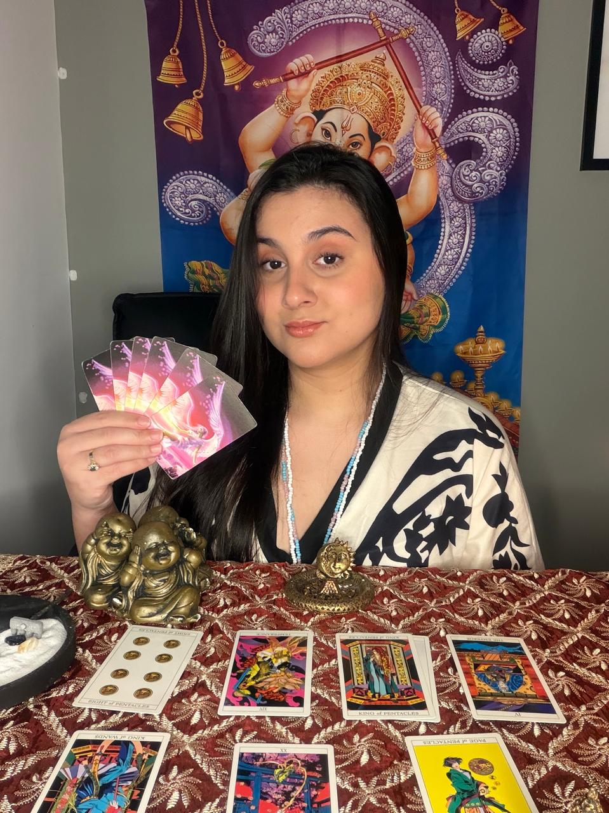

Trabalhos Amorosos
Em amarrações, uniões e adoçamentos, o foco é fortalecer vínculos e aproximar corações com total responsabilidade.

Encontre o direcionamento espiritual para os seus caminhos e reconquiste a paz no amor.
Agende a sua consultaMãe de Santo e taróloga, Flávia tem dedicado os últimos 15 anos de sua vida ao cuidado espiritual e ao auxílio de pessoas que buscam respostas, equilíbrio e verdadeira transformação.
Seu trabalho é inteiramente guiado pela fé, pela sensibilidade e por uma forte conexão com o plano espiritual. Ela acredita que cada história é única, conduzindo cada caminho de forma acolhedora e empática.
Lidando com os seus desafios da forma mais respeitosa e sigilosa possível, com a Flávia você encontrará um porto seguro, um lugar onde a sua confiança e a sua paz de espírito vêm sempre em primeiro lugar.
Cuidado espiritual conduzido com seriedade e respeito à sua jornada.
Em amarrações, uniões e adoçamentos, o foco é fortalecer vínculos e aproximar corações com total responsabilidade.
Leitura oracular profunda para orientar decisões, prever tendências e revelar com precisão o que está oculto no seu destino.
Purificação de energias densas, restaurando o equilíbrio, a paz interior e a harmonia vital em sua vida.
Trabalhos focados em amolecer corações rígidos, promovendo o perdão, a compreensão e a reaproximação com leveza.
Apoio espiritual dedicado a afastar dependências e energias negativas, fortalecendo a vontade e a renovação pessoal.
Desfazimento de trabalhos e feitiços enviados contra você, garantindo proteção espiritual e a libertação de bloqueios.
Essencial na sua jornada, a consulta identifica a raiz dos problemas e revela soluções, trazendo direcionamento e clareza.
Remoção de bloqueios e alinhamento de energias. Novas portas e oportunidades de prosperidade se abrirão com proteção.
Cuidados espirituais poderosos que auxiliam no magnetismo pessoal, abrindo portas na vida amorosa e prosperidade financeira.
Se você sente que precisa de mudanças, está com problemas no amor ou busca respostas claras, Flávia está aqui para te orientar, ajudar e abrir seus caminhos.
Não adie sua felicidade. Quanto mais você se conecta, mais claro fica o caminho.
Atendimento 24 horas, sempre que você precisar.